Tema 3.A.4
El pensamiento económico de Keynes. Referencia a la economía postkeynesiana y el desequilibrio.
Demanda efectiva, multiplicador, preferencia por la liquidez y paro involuntario de Keynes; la escuela de Cambridge, Minsky y el desequilibrio de Clower.
Exclusivo Material exclusivo de victorgutierrezmarcos.es y la app Oposición TCEE · DCE. Puedes usarlo libremente para tu estudio personal. No se autoriza su incorporación a otras plataformas, aplicaciones o servicios. Condiciones de uso.
Introducción
Enganche:
«Pan para hoy, hambre para mañana», dice el refrán: lo que se gasta hoy sin pensar en el futuro se paga mañana. Es la objeción de siempre al gasto público financiado con deuda.
En julio de 2020, con media economía parada por la pandemia, el Consejo Europeo acordó NextGenerationEU: 750.000 millones de euros (a precios de 2018) financiados con deuda común para sostener la inversión y la demanda. Nadie propuso esperar a que bajaran los salarios.
El propio nombre del fondo le da la vuelta al refrán: el pan de hoy se gasta pensando en la próxima generación, porque quien no come hoy no puede construir el futuro con el estómago vacío.
Ese giro es de John Maynard Keynes. A quienes confiaban en que la economía vuelve sola a su equilibrio les contestó: «este largo plazo es una mala guía para los asuntos de hoy. A largo plazo, todos muertos».
Detrás está la pregunta de esta exposición: ¿se corrige sola una economía con paro, o hay que empujarla?
Relevancia:
Para la teoría: con la Teoría general nace la macroeconomía como disciplina, el estudio de la producción, el empleo y los precios de la economía en su conjunto, con los agregados (consumo, inversión, ahorro, renta) que mide la contabilidad nacional [ver tema 3.A.30].
Para la política económica: la política fiscal de estabilización y la idea de que el Estado responde del nivel de empleo vienen de Keynes.
Para la actualidad: cada gran recesión lo ha devuelto al centro del debate. En 2008-2009 y en 2020 se discutió el tamaño de los multiplicadores fiscales [ver tema 3.A.40], qué hacer con los tipos de interés en cero, la vieja trampa de la liquidez [ver tema 3.A.37], y la inestabilidad financiera de Minsky [ver tema 3.A.42].
Además, como toda historia del pensamiento económico, enseña a no quedarse con el último manual y a ver por qué unas ideas llegan en unas épocas y no en otras: son 2 de los 4 motivos que da Schumpeter para estudiarla.1
Contextualización:
La historia del pensamiento económico avanza por revoluciones: un paradigma domina hasta que acumula anomalías que no sabe explicar y otro lo sustituye [ver tema 3.A.1].
Para los clásicos [ver tema 3.A.2] y los neoclásicos [ver tema 3.A.3], la oferta crea su propia demanda (la ley de Say), los precios y los salarios flexibles vacían los mercados y el dinero solo fija el nivel de precios. Keynes los llamará a todos «clásicos» (anexo B).
La anomalía fue el paro de entreguerras. En el Reino Unido, el paro de los trabajadores asegurados no bajó del 9,7 % de 1921 a 1929 y llegó al 22,1 % en 1932; en Estados Unidos, el PIB real cayó un 26 % entre 1929 y 1933 y el paro llegó al 25 % de la población activa. La receta ortodoxa, bajar los salarios, no lo curaba.
Keynes (1936) responde con la Teoría general de la ocupación, el interés y el dinero: la producción y el empleo los fija la demanda efectiva, y una economía de mercado puede quedarse con paro involuntario sin que nada la saque de ahí.
El libro es rico y oscuro a la vez, y sus herederos lo leyeron de 3 maneras:
la síntesis neoclásica lo tradujo al lenguaje de los neoclásicos con el modelo IS-LM: Keynes para el corto plazo, con salarios rígidos, y los neoclásicos para el largo [ver tema 3.A.5];
los postkeynesianos de Cambridge vieron en esa traducción una traición y llevaron la demanda efectiva y la incertidumbre al largo plazo, a la distribución y a las finanzas;
los keynesianos del desequilibrio releyeron a Keynes como una teoría de los intercambios a precios que no vacían los mercados, y abrieron el camino a la nueva economía keynesiana [ver tema 3.A.7].
Problemática:
¿Qué es la demanda efectiva y por qué puede haber paro involuntario aunque los salarios bajen?
¿Qué papel tienen el dinero, el tipo de interés y la incertidumbre?
¿Qué política económica se deduce?
¿Era la síntesis la única lectura posible de Keynes? ¿Qué añaden Cambridge y el desequilibrio?
Estructura:
La exposición va del modelo que Keynes critica a su alternativa, y de esta a lo que hicieron con ella los herederos que no aceptaron la síntesis:
I. La escuela keynesiana y John Maynard Keynes (I): quiénes forman la escuela, el contexto y la obra de Keynes y el modelo neoclásico del que parte;
II. El pensamiento económico de Keynes: formalización y política económica (II): la demanda efectiva, el dinero y el paro involuntario, lo que implican para la política y cómo se leyó la Teoría general;
III. La economía postkeynesiana y el desequilibrio (III): la escuela de Cambridge (Kalecki, Robinson, Kaldor, Minsky) y los teóricos del desequilibrio (Patinkin, Clower, Leijonhufvud, Malinvaud).
3.A.4. El pensamiento económico de Keynes. Referencia a la economía postkeynesiana y el desequilibrio
Introducción2′30″
I. La escuela keynesiana y John Maynard Keynes6′
1. Caracterización general de la escuela keynesiana según Schumpeter
2. Contexto, método y obra
3. El punto de partida: el modelo neoclásico
II. El pensamiento económico de Keynes: formalización y política económica10′30″
1. Formalización del pensamiento de Keynes y comparación con el modelo neoclásico
2. Implicaciones de política económica
3. Valoración: las lecturas de la Teoría general
III. La economía postkeynesiana y el desequilibrio10′
1. La economía postkeynesiana: la escuela de Cambridge
2. Los keynesianos del desequilibrio
Conclusión1′
Reparto del cante: introducción, 2′30″; I, 6′ (I.1, 1′30″; I.2, 2′; I.3, 2′30″); II, 10′30″ (II.1, 7′30″: bienes, 3′30″, dinero, 2′, y trabajo, 2′; II.2, 2′; II.3, 1′); III, 10′ (III.1, 5′30″; III.2, 4′30″), y conclusión, 1′. Keynes se lleva 16′30″ y sus herederos 10′: es la proporción que pide el título, que deja a los postkeynesianos y al desequilibrio como «referencia». Además del refrán del enganche, las 6 pegatinas, cada una con su concepto: «¿Dónde va Vicente? Donde va la gente» (las convenciones del capítulo 12), «puedes llevar el caballo al río, pero no obligarlo a beber» (la trampa de la liquidez), «desnudar a un santo para vestir a otro» (bajar los salarios, capítulo 19), «no se pueden sumar peras con manzanas» (la controversia del capital), «después de la calma viene la tempestad» (Minsky) y «de donde no hay, no se puede sacar» (la decisión dual de Clower). El árbol de la escuela keynesiana se presenta con la caracterización de la escuela y se completa con sus herederos; las funciones clave, desde la formalización hasta el final, son la demanda efectiva con su multiplicador y la preferencia por la liquidez. Lo que no se canta (el anexo A y los párrafos de profundización) sirve para las preguntas del tribunal.
I. La escuela keynesiana y John Maynard Keynes
Empezamos por la escuela que fundó Keynes, por el autor y por la teoría que quería sustituir.
Conclusión anticipada: Keynes funda una escuela cuyo objeto es explicar el paro involuntario como un fallo del sistema económico en su conjunto, y no de un mercado. Lo hace con el paro británico de entreguerras delante y frente a un modelo neoclásico en el que la flexibilidad de los precios, los salarios y el tipo de interés asegura el pleno empleo y el dinero es neutral.
I.1. Caracterización general de la escuela keynesiana según Schumpeter
Schumpeter reconoce una escuela de pensamiento por 3 rasgos: un líder, unos seguidores y un cuerpo doctrinal propio, con su objeto y su método. El keynesianismo los tiene:
Líder:
John Maynard Keynes (1883-1946).
Seguidores:
Se reparten en 3 ramas que discrepan entre sí sobre qué dijo de verdad Keynes:
la síntesis neoclásica: John Hicks, Alvin Hansen, Paul Samuelson, Franco Modigliani, James Tobin, Robert Solow, Lawrence Klein y James Meade [ver tema 3.A.5];
los postkeynesianos de Cambridge: Richard Kahn, Joan Robinson, Nicholas Kaldor, Piero Sraffa y Luigi Pasinetti, con Michał Kalecki como precursor y, en Estados Unidos, Hyman Minsky, Paul Davidson y Sidney Weintraub (III.1);
los keynesianos del desequilibrio: Don Patinkin como antecedente, Robert Clower, Axel Leijonhufvud, Robert Barro, Herschel Grossman y Edmond Malinvaud (III.2).
Cuerpo doctrinal:
objeto: demostrar que puede existir paro involuntario, el de quien quiere trabajar al salario vigente y no encuentra empleo, y que su causa es una demanda agregada insuficiente: un fallo de la economía en su conjunto, no del mercado de trabajo;2
método: el análisis agregado y de corto plazo de un sistema de mercados interdependientes, con el instrumental de Marshall (la competencia perfecta y el razonamiento verbal) y no con el equilibrio general de Walras;3 un papel central de la incertidumbre y de las expectativas; y la economía como ciencia moral, al servicio de la política.
| Supuesto | Neoclásicos | Keynes (1936) |
|---|---|---|
| Horizonte | Largo plazo: el equilibrio al que tiende la economía | Corto plazo, con el equipo productivo dado: «a largo plazo, todos muertos» |
| Información | Perfecta, o riesgo que se puede calcular | Incertidumbre que no se reduce a probabilidades: expectativas volátiles y convenciones (cap. 12) |
| Salario | Real, fijado por la oferta y la demanda de trabajo; flexible | Nominal, negociado; los trabajadores defienden su salario relativo y se resisten a que se lo bajen (cap. 2); aunque bajara, no garantizaría el pleno empleo (cap. 19) |
| Precios | Flexibles, en competencia perfecta | También flexibles, en competencia perfecta: suben con el empleo por los rendimientos decrecientes |
| Tipo de interés | Real; iguala el ahorro y la inversión (fondos prestables) | Monetario; lo fija la preferencia por la liquidez (cap. 13) |
| Dinero | Medio de cambio; neutral | También depósito de valor: puede atesorarse |
| Ley de Say | Se cumple: no hay exceso de oferta general | No se cumple: la demanda efectiva fija la producción (cap. 3) |
Fuente: elaboración propia a partir de Keynes (1936) y De Vroey (2016). En azul, los supuestos que cambia Keynes.
Lo que cambia frente a los neoclásicos: Keynes mantiene la competencia perfecta y no recurre a la competencia imperfecta que se estaba formulando en esos años:4 si el paro se debiera al poder de mercado o a los sindicatos, sería un problema de monopolios, y Keynes buscaba un fallo más profundo, que se diera incluso con competencia perfecta. Cambia, en cambio, los supuestos de la tabla 1, que el bloque II desarrolla uno a uno.
I.2. Contexto, método y obra
Formación:
Nace en Cambridge en 1883, hijo del economista John Neville Keynes y de Florence Ada Brown.5
Estudia matemáticas en el King’s College, donde se gradúa en 1905, y se forma como economista con Alfred Marshall y Arthur Cecil Pigou.
De Marshall toma el método: el razonamiento de corto plazo, el equilibrio en tiempo real y el peso de las expectativas [ver tema 3.A.3] [ver tema 3.A.16].
Del Estado a Cambridge:
En 1906 entra en la India Office, de donde sale su primer libro, Indian Currency and Finance; en 1908 vuelve a Cambridge como profesor.6
Su disertación sobre la probabilidad le da en 1909 la fellowship del King’s College y se publica en 1921 como A Treatise on Probability.
La probabilidad como grado de creencia razonable, que no siempre puede medirse, es la raíz de su incertidumbre [ver tema 3.A.10].
Las 3 etapas de su obra:
Cada etapa está ligada a un problema de su tiempo (gráfico 1):
la Primera Guerra Mundial y sus secuelas: trabaja en el Tesoro durante la guerra;7 representa al Tesoro en la Conferencia de Paz de París, dimite y critica las reparaciones impuestas a Alemania en The Economic Consequences of the Peace; en el Tract on Monetary Reform defiende la estabilidad de los precios frente a la vuelta al patrón oro a la paridad de antes de la guerra, y en The End of Laissez-Faire anuncia que el Estado tendrá que hacer lo que nadie hace;
la Gran Depresión: el Treatise on Money, todavía dentro de la teoría cuantitativa, se discute en 1930-1931 en el «círculo» de jóvenes economistas de Cambridge (Richard Kahn, Joan Robinson y Austin Robinson, Piero Sraffa y James Meade), la semilla de la escuela postkeynesiana (III.1). De ese círculo sale el multiplicador de Kahn (1931), y de la discusión, la Teoría general, que Keynes defiende al año siguiente frente a sus críticos;
la Segunda Guerra Mundial: en How to Pay for the War propone el ahorro obligatorio para financiar la guerra sin inflación. En Bretton Woods (1944) presenta el Plan Keynes, una unión de compensación con una moneda internacional, el bancor, y un ajuste simétrico entre acreedores y deudores; se impone el Plan White estadounidense [ver tema 3.B.20]. En marzo de 1946 asiste en Savannah, como gobernador por el Reino Unido, a la reunión inaugural del FMI y del Banco Mundial [ver tema 3.B.22], y muere el 21 de abril en Tilton (Sussex).
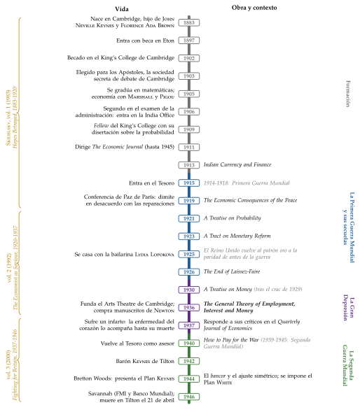
Keynes, según las biografías de Robert Skidelsky
La biografía: 3 volúmenes y una versión abreviada en uno. Los títulos resumen la vida: las esperanzas traicionadas en Versalles (1883-1920), el economista como salvador (1920-1937) y la lucha por Gran Bretaña durante la guerra (1937-1946).
Eton y Cambridge: entra en Eton con beca en 1897 y llega al King’s College con otra. En 1903 lo eligen para los Apóstoles, la sociedad secreta de debate de Cambridge, donde le marcó la ética de George Edward Moore.
El examen de 1906: queda segundo en el examen de ingreso en la administración y su peor nota es la de economía; comentó que, por lo visto, los examinadores sabían menos que él. El primero eligió el Tesoro, y Keynes tuvo que conformarse con la India Office.
Las pesetas de 1915: ya en el Tesoro, se cuenta que reunió una gran cantidad de pesetas y las vendió de golpe para bajar la cotización de la moneda española, lo que convenía al Reino Unido, que compraba mucho a una España neutral.
El especulador: en 1920 especuló con divisas y estuvo cerca de la quiebra; salió adelante con préstamos de sus amigos y llegó a amasar una fortuna. Como tesorero (bursar) del King’s College gestionó durante décadas sus inversiones.
Las artes: en febrero de 1936, el mismo mes que la Teoría general, abre el Arts Theatre de Cambridge, pagado en gran parte de su bolsillo; durante la guerra preside el comité de fomento de la música y las artes, y lo eligen para presidir el Arts Council de Gran Bretaña, que nace en 1946, el año de su muerte.
Newton: en 1936 compra en la subasta de Sotheby’s manuscritos de Isaac Newton, muchos de alquimia, y los reúne poco a poco. En su conferencia «Newton, the Man», que leyó su hermano Geoffrey Keynes en 1946, tras su muerte, lo describe como el último de los magos y no el primero de la edad de la razón.
La enfermedad: en 1937 sufre un infarto; lo trata el médico húngaro Janos Plesch, y desde entonces trabaja con el corazón enfermo hasta su muerte en 1946, agotado por las negociaciones de Bretton Woods y del préstamo estadounidense de 1945.
Para ver. Su vida y sus ideas, en el documental de la BBC «Masters of Money», 1.ª parte: John Maynard Keynes (YouTube).
El contexto económico:
Keynes escribe con el paro británico delante, no solo con el crash de 1929 (gráfico 2).
En 1921 el PIB real británico cayó un 9,7 % y el paro de los asegurados llegó al 16,9 %; en toda la década no volvió a bajar del 9,7 %.
La vuelta al patrón oro a la paridad de antes de la guerra, en abril de 1925, encareció la libra y obligaba a bajar los salarios y los precios para recuperar la competitividad.
Con la Gran Depresión, el Reino Unido abandonó el oro en septiembre de 1931, y el paro de los asegurados subió al 22,1 % en 1932.
Para la teoría de la época el paro tenía que ser pasajero: si persistía, era por algo que impedía bajar los salarios (I.3).
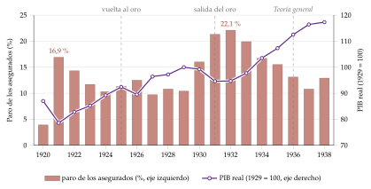
Fuente: elaboración propia a partir de Bank of England (2017). El paro es la tasa de los trabajadores asegurados, la cifra oficial de la época (unos 12 millones de trabajadores, sobre todo manuales); sobre la población activa total, comparable con la EPA, fue del 15,4 % en 1932. PIB real en índice 1929 = 100.
Su propósito:
No era un revolucionario: quería salvar el capitalismo de sí mismo, en una época en la que el paro masivo y el ascenso de los totalitarismos lo ponían en peligro.
Proponía un capitalismo reformado, con el Estado responsable del nivel de empleo, que conservara la libertad y la eficiencia de los mercados.
I.3. El punto de partida: el modelo neoclásico
a) Idea
Para entender qué cambia Keynes, hay que ver antes el modelo que quería sustituir: el punto de partida (baseline) frente al que se mide la Teoría general.
Ese modelo no lo escribió un solo autor. Es la reconstrucción habitual a partir de Marshall, Pigou, Fisher y Wicksell.
De Marshall viene el mercado que se vacía: en su mercado de pescado, el precio vacía el mercado cada día y, con tiempo, la cantidad se ajusta hacia el equilibrio normal [ver tema 3.A.16] (anexo A). En un mercado así no hay recursos ociosos persistentes. Keynes conservará el método de su maestro, el corto plazo y el ajuste por cantidades, pero lo llevará a la economía entera.
El «modelo neoclásico» de este apartado y el «modelo keynesiano» del bloque II son reconstrucciones: reúnen aportaciones de distintos autores y usan gráficos y fórmulas que Keynes y sus maestros no siempre escribieron. Además, el pensamiento de Keynes admite varias lecturas; lo que sigue es la formalización habitual, con la notación del resto del temario.
b) Modelo
i) Supuestos
Economía cerrada, con el capital dado, en la que los mercados de bienes, de trabajo y de dinero son de competencia perfecta.
Precios, salarios y tipo de interés flexibles: cada mercado se vacía.
Información perfecta y agentes racionales que deciden en términos reales, sin ilusión monetaria.
El dinero solo es medio de cambio: nadie guarda dinero ocioso pudiendo prestarlo con interés.
ii) Desarrollo
La causalidad va del mercado de trabajo al de dinero: el trabajo fija el empleo y la producción, los fondos prestables reparten esa producción entre consumo e inversión, y el dinero fija los precios.
El mercado de trabajo fija el empleo [ver tema 3.A.25]. Las empresas contratan hasta que el salario real iguala la productividad marginal del trabajo, y los hogares ofrecen más trabajo cuanto mayor es el salario real: \[w\equiv\frac{W}{P}=\mathrm{PMg}_L(L),\qquad L^S=L^S(w),\qquad L^D(w^c)=L^S(w^c)\ \Rightarrow\ L^c,\quad Y_F=F(L^c). \tag{1}\]
Con el salario real flexible, el mercado se vacía en \((L^c,w^c)\), el pleno empleo, y la función de producción da la producción de pleno empleo, \(Y_F\) (panel a del gráfico 4).
La oferta agregada es vertical en \(Y_F\): si suben los precios, el salario nominal sube en la misma proporción, el real no cambia y tampoco el empleo.
El mercado de bienes fija el tipo de interés real [ver tema 3.A.33]. Con la producción dada, la igualdad entre la producción y el gasto, \(Y=C+I+G\), se lee como un mercado de fondos prestables (gráfico 3): \[S(r)=I(r)+G-T\ \Rightarrow\ r^n. \tag{2}\]
La oferta de fondos es el ahorro, que crece con el tipo de interés real (premia la renuncia al consumo presente); la demanda, la inversión más el déficit público, que decrece con él (se invierte hasta que la productividad marginal del capital iguala el tipo).
El tipo que iguala las 2 es el tipo natural, \(r^n\), de Wicksell.8

Fuente: elaboración propia a partir de Fonseca (s. f.).
El mercado de dinero fija el nivel de precios: la teoría cuantitativa [ver tema 3.A.35]. Con la ecuación de cambio de Fisher (1911), \(M\,V=P\,Y\), o con la demanda de saldos de caja de Cambridge, \(M^D=k\,P\,Y\), con \(k=1/V\), y con \(V\) (o \(k\)) estable y la producción en \(Y_F\): \[P=\frac{M\,V}{Y_F}=\frac{M}{k\,Y_F}. \tag{3}\]
Para cada cantidad de dinero, \(P\,Y=M\,V\) es una demanda agregada con forma de hipérbola en el plano \((Y,P)\). Con la oferta agregada vertical, más dinero solo sube los precios en la misma proporción (panel b del gráfico 4).
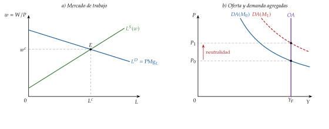
Fuente: elaboración propia a partir de Fonseca (s. f.) y Heijdra (2017, cap. 1); la misma escala que el mercado de trabajo keynesiano (gráfico 7).
iii) Implicaciones
Se cumple la ley de Say: todo lo que se ahorra se invierte, porque el tipo de interés real iguala el ahorro y la inversión. No puede haber un exceso de oferta general de bienes.
La política fiscal no mueve la producción: más gasto público sube el tipo de interés y desplaza la misma cantidad de gasto privado (menos consumo, porque se ahorra más, y menos inversión). La expulsión es total: cambia la composición de la demanda, no su nivel. De ahí la defensa del presupuesto equilibrado.
La política monetaria tampoco: el dinero es neutral y se cumple la dicotomía clásica: las variables reales se determinan sin el dinero.
El paro: solo hay paro friccional y voluntario. Si persiste, es porque algo impide que el salario baje:
los sindicatos, como estudia Hicks (1932) [ver tema 3.A.27];
el poder de mercado de las grandes empresas, el de la competencia monopolística de Chamberlin (1933) [ver tema 3.A.18].
La receta es flexibilizar: bajar los salarios y dejar hacer al mercado (laissez-faire).
c) Valoración
Es un modelo coherente, en el que cada mercado fija una variable y la economía vuelve sola al pleno empleo.
Pero no explicaba un paro masivo que duraba años ni por qué bajar los salarios no lo curaba. Esa es la anomalía de la que parte Keynes.
Recapitulación: en el modelo neoclásico manda la oferta: el trabajo fija la producción, el tipo de interés real reparte el gasto y el dinero solo fija los precios. Una vez visto el modelo que Keynes quería sustituir, pasamos a su alternativa. El tipo de interés será la primera víctima: de \(r\) pasamos a \(i\), y el interés deja de ser el precio del ahorro para ser el precio de la liquidez.
II. El pensamiento económico de Keynes: formalización y política económica
Una vez visto el modelo de partida, pasamos a la formalización de la Teoría general, a sus consecuencias para la política económica y a las lecturas que se hicieron de ella.
Conclusión anticipada: Keynes invierte la causalidad neoclásica. La demanda efectiva fija la producción y el empleo; el tipo de interés se fija en el mercado de dinero, no en el de fondos prestables; el ahorro se ajusta a la inversión a través de la renta, y puede haber paro involuntario aunque los salarios bajen. El remedio es la política fiscal.
Keynes no escribió el modelo que sigue: la Teoría general tiene pocas ecuaciones, y ya en el prefacio dirigía el libro a sus colegas economistas, a los que dejaba la tarea de juzgarlo. Las fórmulas son la forma lineal que se hizo habitual después, con la notación del resto del temario; donde la forma lineal no es fiel al libro, se avisa.
II.1. Formalización del pensamiento de Keynes y comparación con el modelo neoclásico
Keynes invierte la causalidad: donde los neoclásicos empezaban por el mercado de trabajo, él termina. Por eso los mercados van en el orden de la Teoría general:
la demanda efectiva fija la producción (bienes);
el dinero fija el tipo de interés, del que depende la inversión (dinero);
el empleo sale de los 2, y puede quedarse por debajo del pleno empleo (trabajo).
II.1.1. El mercado de bienes: la demanda efectiva
a) Idea
El capítulo 3 es el corazón del libro. Los empresarios dan el empleo con el que esperan maximizar su beneficio, y para eso comparan 2 funciones del empleo, \(L\):9
la función de oferta agregada, \(Z(L)\): lo que tienen que esperar ingresar para que les compense dar ese empleo;
la función de demanda agregada, \(D(L)\): lo que esperan ingresar vendiendo lo que produce ese empleo.
El empleo se fija donde se cortan, \(D(L)=Z(L)\): es el punto de demanda efectiva. Nada asegura que sea el de pleno empleo. La ley de Say equivale a suponer que \(D(L)=Z(L)\) para cualquier \(L\): entonces todo empleo sería un equilibrio y la competencia lo llevaría hasta el máximo. Si no es así, la economía puede pararse antes.
La clave está en el consumo: cuando el empleo y la renta suben, el consumo sube menos, y la diferencia la tiene que cubrir la inversión. Si no la cubre, los empresarios no venden lo que esperaban y reducen el empleo.
b) Modelo
i) Supuestos
Economía cerrada a corto plazo, con el equipo productivo, la técnica y la población dados.
Competencia perfecta en el mercado de bienes y el salario nominal dado en cada momento.
Hay recursos ociosos: las empresas producen lo que se les demanda.
El tipo de interés no se fija en este mercado: viene del de dinero (II.1.2). Aquí se toma como dado, \(i=i_0\).
ii) Desarrollo
El consumo [ver tema 3.A.33]: la propensión a consumir es «una función bastante estable» de la renta, según una ley psicológica fundamental: cuando la renta sube, el consumo sube, pero menos. En forma lineal, \[C_t=\overline{C}+c\,Y^d_t,\qquad 0<c<1,\qquad Y^d_t=(1-t)\,Y_t, \tag{4}\] con \(\overline{C}\) el consumo autónomo, \(c\) la propensión marginal a consumir y \(t\) el tipo impositivo.
La propensión media, \(C_t/Y^d_t=\overline{C}/Y^d_t+c\), es mayor que la marginal y baja con la renta: quien gana más ahorra una parte mayor.
El ahorro es lo que queda, \(S_t=Y^d_t-C_t\), y ya no depende del tipo de interés, sino de la renta.10
Una advertencia: Keynes no supuso que la propensión marginal a consumir fuera constante: «la propensión marginal a consumir no es constante para todos los niveles de empleo, y es probable que, por regla general, tienda a disminuir a medida que el empleo aumenta». La recta (4), con \(c\) constante, es una simplificación posterior de la síntesis neoclásica.
La inversión [ver tema 3.A.34]: no depende del ahorro disponible, sino de lo que se espera ganar con ella y del tipo de interés.
La eficiencia marginal del capital (EMgK) es el tipo de descuento que iguala el valor actual de los rendimientos esperados de un bien de capital, \(R^e_t\), con su precio de oferta, \(P^K\): \[P^K=\sum_{t=1}^{T}\frac{R^e_t}{(1+\mathrm{EMgK})^t}. \tag{5}\]
Se invierte hasta que la EMgK de la última inversión iguala el tipo de interés, \(\mathrm{EMgK}=i\). En forma lineal, \[I=\overline{I}-b\,i,\qquad b>0, \tag{6}\] con \(\overline{I}\) lo que depende de las expectativas y \(b\) la sensibilidad al tipo de interés, que Keynes creía pequeña.
La incertidumbre (capítulo 12): los rendimientos esperados dependen de un futuro que no se puede calcular. Como no hay base para hacerlo, los inversores siguen convenciones: suponen que lo de hoy seguirá y, en bolsa, tratan de adivinar lo que pensará la mayoría, como en un concurso de belleza en el que se premia acertar la cara que elegirán los demás. Pegatina: «¿Dónde va Vicente? Donde va la gente».
Cuando la convención se rompe, las expectativas se hunden. Por eso la inversión es la parte más inestable de la demanda, movida por los animal spirits: «un impulso espontáneo a la acción, en vez de a la inacción, y no el resultado de una media ponderada de beneficios cuantitativos multiplicados por probabilidades cuantitativas». Al responder a sus críticos, Keynes (1937) dejó claro que la incertidumbre era el mensaje central del libro [ver tema 3.A.10].
El equilibrio y el multiplicador: la demanda agregada planeada es \(\mathrm{DA}=\overline{C}+c\,(1-t)\,Y+\overline{I}-b\,i_0+\overline{G}\), con \(\overline{G}\) el gasto público, y la producción se ajusta hasta igualarla, \(Y=\mathrm{DA}\). A tipo de interés dado,
\[Y^*=\frac{\overline{C}+\overline{I}-b\,i_0+\overline{G}}{1-c\,(1-t)}\qquad\Longrightarrow\qquad \Delta Y^*=\frac{\Delta\overline{G}}{1-c\,(1-t)}\tag{7}\]
Es el multiplicador: cada euro de gasto autónomo es renta de alguien, que gasta una parte, que es renta de otro, y así sucesivamente. Como \(0<c\,(1-t)<1\), el multiplicador es mayor que 1.
Kahn (1931) lo formuló para el empleo que crean las obras públicas, y Keynes lo aplicó a la inversión.
Si el tipo de interés cambia con la renta, la misma ecuación da la curva IS de la síntesis [ver tema 3.A.5].

El ajuste (la cruz keynesiana, en la forma que le dio Samuelson (1948); gráfico 5):
a la derecha de \(Y^*\) se produce más de lo que se demanda: lo que no se vende se acumula en existencias, una inversión que nadie había planeado (la inversión realizada supera a la planeada), y las empresas reducen la producción;
a la izquierda, las existencias bajan (la inversión realizada es menor que la planeada) y las empresas producen más.
La variable que se ajusta es la renta, no el tipo de interés: el ahorro se iguala a la inversión porque la renta se mueve hasta que el ahorro de los hogares es justo el que absorbe la inversión.
iii) Implicaciones
La ley de Say no se cumple: nada asegura que \(Y^*\) sea la producción de pleno empleo, \(Y_F\). Si la inversión cae, la renta cae varias veces más.
La paradoja del ahorro: si todos intentan ahorrar más, el consumo cae, la renta cae con el multiplicador y, en el nuevo equilibrio, el ahorro nacional, \(S+(T-\overline{G})\), sigue siendo igual a la inversión, \(\overline{I}-b\,i_0\): se ahorra lo mismo en total, con menos renta y menos empleo. Si la inversión depende de la renta, el ahorro total incluso baja. Lo que es prudente para uno es dañino para todos: Keynes recuerda la Fábula de las abejas de Bernard Mandeville.
Frente a los neoclásicos: allí más ahorro bajaba el tipo de interés y subía la inversión; aquí la inversión apenas responde al tipo (\(b\) pequeño) y ese mecanismo no compensa la caída de la demanda. El ahorro se ajusta a la inversión, y no al revés.
II.1.2. El mercado de dinero: la preferencia por la liquidez
a) Idea
Con la inversión ya no atada al ahorro, falta saber qué fija el tipo de interés. Para Keynes no es el precio que iguala el ahorro y la inversión: es el precio de desprenderse de la liquidez, la recompensa por renunciar a ella y no por renunciar al consumo.
b) Modelo
i) Supuestos
Dos activos financieros: el dinero, que no rinde, y los bonos a largo plazo, cuyo precio baja cuando sube el tipo de interés.
La oferta de dinero, \(M\), es exógena: la fija el banco central.
Cada inversor tiene su propia idea del tipo de interés «normal» al que volverá el mercado.
ii) Desarrollo
La demanda de dinero [ver tema 3.A.35]: el público guarda dinero por 3 motivos:
transacción: para los pagos corrientes, que crecen con la renta;
precaución: para imprevistos, también ligado a la renta;
especulación: si el tipo de mercado está por debajo del que un inversor cree normal, espera que suba y que baje el precio de los bonos, y prefiere el dinero para no perder; si está por encima, espera que baje y compra bonos para ganar con la subida de su precio. Como las ideas de lo «normal» son distintas, la demanda agregada de dinero especulativo sube de forma continua cuando baja el tipo.
Los 2 primeros motivos dependen de la renta, \(L_1(Y)\), y el tercero, del tipo de interés, \(L_2(i)\). En forma lineal:
\[\frac{M}{P}=L_1(Y)+L_2(i)=k\,Y-h\,i,\qquad k,\,h>0\tag{8}\]
con \(k\) la sensibilidad a la renta y \(h\) al tipo de interés.11
El tipo de interés es el que iguala la demanda de saldos reales con la oferta (gráfico 6): \[i=\frac{1}{h}\Big(k\,Y-\frac{M}{P}\Big). \tag{9}\] Es un fenómeno monetario: más dinero lo baja y más renta lo sube.
La trampa de la liquidez: con un tipo tan bajo que todos esperan que suba, cualquier dinero de más se atesora y el tipo no baja: la demanda de dinero se vuelve horizontal. Keynes la veía posible, aunque decía no conocer ningún caso. Pegatina: «puedes llevar el caballo al río, pero no obligarlo a beber».

Fuente: elaboración propia a partir de Keynes (1936, caps. 13 y 15). La forma lineal \(k\,Y-h\,i\) no tiene tramo horizontal: la trampa es el límite \(h\to\infty\).
iii) Implicaciones
El ataque a la ley de Say: si el dinero es también depósito de valor, guardarlo no es irracional. Una parte de la renta puede quedarse en saldos ociosos en lugar de gastarse, y la economía se atasca por debajo del pleno empleo:
la ley de Say, en la formulación de Lange (1942), afirma que el valor de los excesos de demanda de los bienes, sin contar el dinero, es nulo: nunca puede haber un exceso de oferta general de bienes;
en una economía monetaria, en cambio, un exceso de oferta de bienes puede ir acompañado de un exceso de demanda de dinero [ver tema 3.A.21].
Es la ruptura más profunda con los neoclásicos, y la que acerca a Keynes a los mercantilistas, a los que reivindica en el capítulo 23 por su preocupación por la escasez de dinero y por el tipo de interés.
El dinero no es neutral a corto plazo y se rompe la dicotomía clásica: más \(M\) baja el tipo, sube la inversión y, con el multiplicador, la renta.
Pero la cadena tiene 2 eslabones débiles: la trampa de la liquidez (\(h\) muy grande: el tipo apenas baja) y una inversión que responde poco al tipo (\(b\) pequeño: lo poco que baja mueve poco la inversión).
La demanda de dinero es inestable, porque depende de expectativas sobre el tipo de interés que cambian con facilidad.
Frente a los neoclásicos: el tipo de interés deja de ser real y de igualar el ahorro y la inversión; el dinero deja de ser solo medio de cambio.
II.1.3. El mercado de trabajo: el paro involuntario
a) Idea
El empleo llega al final de la cadena: la demanda efectiva fija la producción, y la producción, el empleo. El mercado de trabajo no decide; recibe lo que deciden los otros 2.
b) Modelo
i) Supuestos
Lo que acepta: la demanda de trabajo neoclásica, el «primer postulado clásico»: las empresas contratan hasta que el salario real iguala la productividad marginal del trabajo.
Lo que rechaza: el «segundo postulado», que el salario real iguale la desutilidad marginal del trabajo, es decir, que los trabajadores estén siempre sobre su curva de oferta.
El salario nominal: los trabajadores negocian el salario nominal, \(W\), y no pueden fijar el real, \(W/P\), que depende de los precios. Se resisten a que les bajen el nominal, porque empeora su posición frente a otros grupos, pero no a que suban los precios, que reduce a la vez el salario real de todos. El salario nominal es rígido a la baja: \(W=W_0\).
ii) Desarrollo
El empleo lo fija la demanda: la demanda agregada fija la producción y, con la función de producción, el empleo; el salario real es el que corresponde a ese empleo, \(\mathrm{PMg}_L=W_0/P\).
Una caída de la demanda (gráfico 7):
en el mercado de bienes (panel b), la demanda agregada pasa de \(\mathrm{DA}_0\) a \(\mathrm{DA}_1\), y la producción y los precios bajan de \(Y_0\) y \(P_0\) a \(Y_1\) y \(P_1\), por debajo de la producción de pleno empleo, \(Y_F\);
en el mercado de trabajo (panel a, con el salario nominal en el eje vertical), la demanda de trabajo, el valor de la productividad marginal, pasa de \(P_0\cdot\mathrm{PMg}_L\) a \(P_1\cdot\mathrm{PMg}_L\);
con el salario nominal fijo en \(W_0\), el empleo cae de \(L_0\) a \(L_1\): el ajuste se hace por cantidades.
El paro involuntario: es el de quienes trabajarían al salario vigente, o a uno algo menor, y no encuentran empleo. Para Keynes lo hay cuando, ante una pequeña subida de los precios respecto del salario nominal, tanto la oferta como la demanda de trabajo a ese salario superarían el empleo existente [ver tema 3.A.28]. Dicho de otro modo: si bajar un poco el salario real por la vía de los precios aumenta el empleo, el paro era involuntario.
La oferta agregada: mientras haya recursos ociosos tiene pendiente positiva (más demanda sube algo los precios, baja el salario real y aumenta el empleo); cuando se agotan, en \(Y_F\), cada subida de precios se traslada a los salarios y la oferta agregada se vuelve vertical, como la neoclásica.
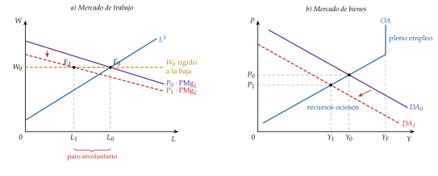
Fuente: elaboración propia a partir de Keynes (1936, cap. 2). OA, oferta agregada.
iii) Implicaciones
¿Y si bajan los salarios? Keynes no hace descansar el paro en la rigidez del salario: en el capítulo 19 la levanta y muestra que bajar los salarios no lo cura.
Una rebaja del salario nominal solo crea empleo si sube la demanda, y para eso tiene que aumentar la inversión: por un tipo de interés más bajo (con precios más bajos sube \(M/P\); es el efecto Keynes) o por una eficiencia marginal del capital más alta.
Nada garantiza ninguna de las 2 cosas: con trampa de la liquidez el tipo no baja, y la deflación empeora las expectativas y aumenta la carga real de las deudas.
Además, la rebaja quita renta a los trabajadores, que son los que más consumen: se quita a unos lo que se querría dar a otros. Pegatina: «desnudar a un santo para vestir a otro».
Por eso, para Keynes, unos salarios nominales estables dan más estabilidad a la economía que unos salarios flexibles: el salario real no lo fija la negociación salarial, sino el resto del sistema, sobre todo la relación entre la eficiencia marginal del capital y el tipo de interés.
La política: contra el paro involuntario, política de demanda; bajar los salarios no es la solución.
Recapitulación de la formalización: en los 3 mercados, Keynes cambia la pieza que cerraba el modelo neoclásico. En bienes, la renta, y no el tipo de interés, iguala el ahorro y la inversión; en dinero, el tipo de interés es monetario; en trabajo, el empleo lo fija la demanda y el salario no lo arregla.
Los 3 mercados, frente a frente:
Cada una de las 3 hojas que siguen resume un mercado en una página: el gráfico, los supuestos, el mecanismo y la conclusión de los neoclásicos y de Keynes, lado a lado.
Van en el orden del modelo neoclásico: el trabajo da la oferta agregada (gráfico 8); los bienes (gráfico 9) y el dinero (gráfico 10), la demanda agregada.
En azul y negrita, los conceptos que introduce Keynes; en el recuadro de abajo, la conclusión y lo que implica para la política económica.
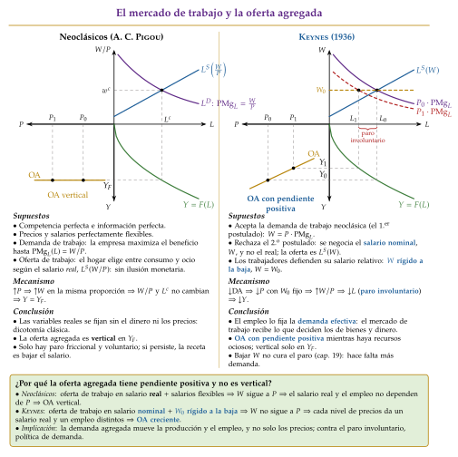
Fuente: elaboración propia a partir de Keynes (1936, caps. 2 y 19) y Heijdra (2017, cap. 1). En cada columna, el mercado de trabajo (arriba a la derecha), la función de producción (abajo a la derecha, con la producción hacia abajo) y la oferta agregada (abajo a la izquierda, con el nivel de precios hacia la izquierda).
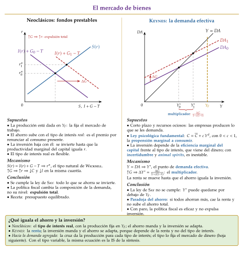
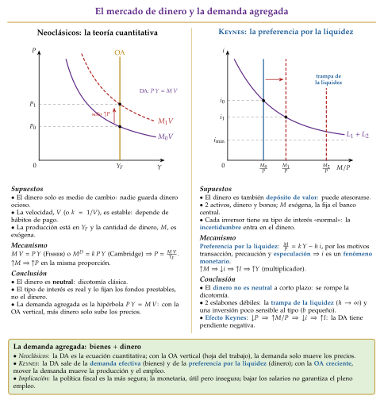
II.2. Implicaciones de política económica
Si la producción la fija la demanda y nada la lleva sola al pleno empleo, el Estado tiene que sostener la demanda (tabla 2):
la política fiscal es la más segura: el gasto público entra directamente en la demanda y se multiplica, y con paro no expulsa inversión, porque hay recursos ociosos y el ahorro se crea con la renta. Un déficit en la depresión no es un vicio, sino el remedio, y la obra pública vale aunque su utilidad directa sea escasa, porque lo que importa es el gasto;
la política monetaria es útil pero insegura, por los 2 eslabones débiles: el tipo baja poco si la preferencia por la liquidez es muy alta, y la inversión responde poco al tipo si las expectativas son malas [ver tema 3.A.34].
| Neoclásicos | Keynes | |
|---|---|---|
| Más gasto público | Ineficaz: sube el tipo de interés real y expulsa el mismo gasto privado; la producción no cambia | Eficaz: la demanda sube y se multiplica; con recursos ociosos suben la producción y el empleo |
| Más dinero | Ineficaz: solo sube los precios en la misma proporción (neutralidad) | Insegura: baja el tipo, sube la inversión y la renta, salvo trampa de la liquidez o inversión insensible |
| Bajar los salarios | Eficaz: vacía el mercado de trabajo y devuelve el pleno empleo | Ineficaz: no asegura más empleo y puede agravar la depresión (cap. 19) |
| Recomendación | Laissez-faire y presupuesto equilibrado | Gestión de la demanda, sobre todo fiscal; socialización de la inversión (cap. 24) |
Fuente: elaboración propia a partir de Keynes (1936) y Heijdra (2017, cap. 1). En verde, lo eficaz; en rojo, lo ineficaz; en dorado, lo que depende de las circunstancias.
Más allá de la coyuntura:
un tipo de interés bajo de forma permanente, que lleve a la «eutanasia del rentista»: el capital dejaría de ser escaso y de rendir solo por serlo;
«una socialización bastante completa de la inversión» como único medio de acercarse al pleno empleo, que no quiere decir nacionalizar la propiedad, sino que el Estado asegure el volumen de inversión;
una redistribución de la renta con impuestos progresivos, que sube la propensión a consumir de la sociedad.
La oferta agregada: con la oferta agregada creciente, la política de demanda mueve la producción y el empleo mientras haya recursos ociosos; cuando se llega a \(Y_F\), solo mueve los precios [ver tema 3.A.32].
La inflación: una expansión puntual sube los precios una sola vez; para mantener el empleo alto habría que repetirla, y eso ya es inflación. A la teoría de Keynes le falta una teoría de la inflación: la curva de Phillips y su crítica la darán después [ver tema 3.A.5] [ver tema 3.A.28].
II.3. Valoración: las lecturas de la Teoría general
Virtudes:
explica el paro masivo de los años 30 como un fallo del sistema, y no del mercado de trabajo, y da una receta para combatirlo;
funda la macroeconomía: un análisis de la economía entera, simplificado y orientado a la política;
rompe la dicotomía clásica a corto plazo: el dinero y las expectativas tienen efectos reales.
Su éxito entre los economistas jóvenes fue inmediato: para Samuelson (1946, pág. 187; traducción propia), la Teoría general «contagió a la mayoría de los economistas de menos de 35 años con la virulencia inesperada de una enfermedad que ataca por primera vez a una tribu aislada de los mares del Sur y la diezma».
Críticas:
la demostración es incompleta: Keynes quería probar que puede haber paro involuntario sin rigideces, y no lo consiguió con el instrumental de su tiempo; el libro se leyó como una teoría de salarios rígidos, justo lo que quería evitar;
es estático y de corto plazo: no tiene una teoría de la inflación ni del crecimiento, que intentarán Harrod y los postkeynesianos (III.1);
no tiene fundamentos microeconómicos explícitos para la demanda efectiva: será el programa de los teóricos del desequilibrio (III.2) y, después, de la nueva economía keynesiana [ver tema 3.A.7].
La lectura de Hicks: el IS-LM [ver tema 3.A.5]:
Hicks (1937) reduce la Teoría general a 2 curvas: la IS, los pares de renta y tipo de interés que equilibran el mercado de bienes (el multiplicador (7) con el tipo variable), y la LM, los que equilibran el de dinero (8). La renta y el tipo se determinan a la vez.
Modigliani (1944) muestra que, con salarios flexibles y sin trampa de la liquidez, el modelo vuelve al pleno empleo: el paro keynesiano pasa a depender de la rigidez del salario nominal.
Es el modelo de la síntesis neoclásica, que lo completará con la curva de Phillips. Para la síntesis, Keynes queda como el caso particular de los salarios rígidos, no como una «teoría general».
¿Traducción o traición? Para Patinkin (1987), la Teoría general hablaba con la voz de Marshall, pero razonaba con el sistema de ecuaciones interdependientes de Walras; la síntesis se quedó con lo segundo. Para unos, la síntesis tradujo a Keynes; para otros, lo traicionó.
Recapitulación: la Teoría general da la vuelta a la causalidad neoclásica (la demanda fija la producción y el empleo; el dinero, el tipo de interés; la renta iguala el ahorro y la inversión) y deja abierta la pregunta de cuál es exactamente su modelo. Una vez vista la lectura de la síntesis, pasamos a las que se enfrentaron a ella.
III. La economía postkeynesiana y el desequilibrio
Una vez vista la lectura de la síntesis, pasamos a las 2 que se enfrentaron a ella.
Conclusión anticipada: los postkeynesianos rechazan el instrumental neoclásico y llevan la demanda efectiva y la incertidumbre al largo plazo, a la distribución y a las finanzas. Los keynesianos del desequilibrio hacen lo contrario: aceptan ese instrumental y buscan en él los fundamentos de Keynes, en una economía en la que los precios no vacían los mercados y los agentes responden a las cantidades. Los 2 coinciden en que el paro no se explica solo con un salario que no baja.
III.1. La economía postkeynesiana: la escuela de Cambridge
a) Caracterización según Schumpeter
Líder: Joan Robinson, con Nicholas Kaldor. El núcleo es el «círculo» que discutió con Keynes el Treatise y la Teoría general: Richard Kahn, que había formulado el multiplicador, Joan Robinson y Piero Sraffa. Se les unen después Michał Kalecki, su precursor, y Luigi Pasinetti; en Estados Unidos, Hyman Minsky, Paul Davidson y Sidney Weintraub.
Su reacción a la síntesis: para Robinson, el IS-LM era un «keynesianismo bastardo»: había devuelto a Keynes al equilibrio neoclásico y olvidado sus 2 lecciones, el tiempo histórico (el futuro es incierto y las decisiones no se pueden deshacer) y la demanda efectiva también a largo plazo.
Objeto, con 4 ideas comunes:
la demanda efectiva manda también a largo plazo: la inversión determina el ahorro, y no al revés;
la incertidumbre fundamental: ninguna distribución de probabilidad la reduce a riesgo;
la distribución de la renta depende de las instituciones y del poder de mercado, no de las productividades marginales, y a su vez afecta a la demanda;
el dinero es endógeno y el sistema financiero, una fuente de inestabilidad.
Método: tiempo histórico frente a equilibrio, clases sociales (trabajadores y capitalistas) en lugar de un agente representativo, precios fijados con un margen sobre los costes y rechazo de la función de producción agregada.
b) Kalecki: demanda efectiva y distribución
Idea: Michał Kalecki12 llegó a la demanda efectiva por su cuenta, desde los esquemas de reproducción de Marx, en un ensayo sobre el ciclo publicado en polaco en 1933, antes que la Teoría general.
Los beneficios: en una economía cerrada, sin sector público y en la que los trabajadores gastan todo lo que ganan, los beneficios \(B\) son iguales a la inversión más el consumo de los capitalistas, \(C_{\mathrm{B}}\): \[B=I+C_{\mathrm{B}}. \tag{10}\] La causalidad va del gasto a los beneficios: los capitalistas deciden cuánto gastan, no cuánto ganan. Kaldor (1956) lo resumió así: los capitalistas ganan lo que gastan y los trabajadores gastan lo que ganan.
El grado de monopolio: las empresas fijan el precio con un margen \(\mu\) sobre el coste directo (salarios y materias primas). Si \(j\) es la relación entre el coste de las materias primas y los salarios, la parte de los salarios en el valor añadido es \[\frac{W\,L}{P\,Y}=\frac{1}{1+\mu\,(1+j)}, \tag{11}\] y depende del poder de mercado de las empresas (la concentración, la publicidad, la fuerza de los sindicatos), no de la productividad marginal. El margen está ligado al índice de Lerner, \(\mathcal{L}=\mu/(1+\mu)\) [ver tema 3.A.17].13
Implicaciones: si los trabajadores consumen más que los capitalistas, subir los salarios reales puede aumentar la demanda, el empleo y hasta los beneficios totales: es la «paradoja de los costes». Que una economía crezca más con salarios altos o con beneficios altos depende de qué pese más, el consumo o la inversión que se resiente con márgenes más bajos [ver tema 3.A.45].
El ciclo político: Kalecki (1943) explica por qué los gobiernos no mantienen el pleno empleo aunque sepan cómo: el pleno empleo duradero da poder a los trabajadores y erosiona la disciplina en las fábricas, y los empresarios presionan para volver a la austeridad. Es un antecedente de los ciclos político-económicos [ver tema 3.A.23].
c) Crecimiento y distribución: Harrod, Kaldor y Pasinetti
Harrod lleva la demanda efectiva al crecimiento: la tasa de crecimiento garantizada, \(s/v\), la que cumple las expectativas de los empresarios, solo coincide por casualidad con la natural, la del pleno empleo, y si la economía se aparta de la garantizada, se aleja cada vez más: es el «filo de la navaja» [ver tema 3.A.43].
La salida de Cambridge (Inglaterra): Solow igualará las 2 tasas haciendo variable la relación capital-producto, \(v\); Kaldor (1956) lo hace con la distribución. Si los capitalistas ahorran una parte \(s_{\mathrm{B}}\) de los beneficios y los trabajadores una parte \(s_{\mathrm{L}}<s_{\mathrm{B}}\) de los salarios, la igualdad entre el ahorro y la inversión, \(s_{\mathrm{B}}\,B+s_{\mathrm{L}}\,(Y-B)=I\), da \[\frac{B}{Y}=\frac{1}{s_{\mathrm{B}}-s_{\mathrm{L}}}\,\frac{I}{Y}-\frac{s_{\mathrm{L}}}{s_{\mathrm{B}}-s_{\mathrm{L}}}. \tag{12}\]
La inversión fija la parte de los beneficios, y no la productividad marginal del capital: si sube la inversión, sube la parte de los beneficios y, con ella, el ahorro que la financia. La tasa de ahorro deja de ser un dato.
Pasinetti (1962) añade que los trabajadores que ahorran acaban teniendo capital y cobrando beneficios. Aun así, en una senda de crecimiento equilibrado la tasa de beneficio solo depende del crecimiento y de lo que ahorran los capitalistas: \[\frac{B}{K}=\frac{\gamma_Y}{s_{\mathrm{B}}}. \tag{13}\] Es la ecuación de Cambridge: no depende de la tecnología ni de lo que ahorren los trabajadores [ver tema 3.A.43] [ver tema 3.A.45].14
d) La controversia del capital
La pregunta: si el capital son máquinas distintas, ¿en qué unidades se suma para meterlo en una función de producción agregada? Robinson (1953) vio la trampa: solo puede sumarse en valor, y ese valor depende del tipo de beneficio, que es lo que la teoría quería explicar con la productividad marginal del capital. Pegatina: «no se pueden sumar peras con manzanas».
El resultado: Sraffa (1960) construye el contraejemplo. Cada técnica tiene una frontera salario-beneficio: cuanto más se paga al trabajo, menos queda para el capital (gráfico 11). Si 2 fronteras se cortan 2 veces, la técnica \(\alpha\) es la más rentable con tipos bajos, la \(\beta\) con tipos intermedios y la \(\alpha\) otra vez con tipos altos: es el retorno de técnicas (reswitching). Entonces no puede ordenarse una técnica como «más intensiva en capital» que otra, y el capital por trabajador puede subir cuando sube el tipo de beneficio (reversión del capital).
El final: el intento de Levhari (1965) de probar que eso no ocurre en la economía en su conjunto resultó erróneo, y Samuelson (1966) lo admitió desde Cambridge (Massachusetts).
Lo que significa para Keynes y la distribución: si no hay una cantidad de capital que medir antes de conocer el tipo de beneficio, la distribución no puede explicarse por las productividades marginales; la explican la acumulación (Kaldor) y el poder de negociación (Kalecki). La macroeconomía, con todo, siguió usando la función agregada como aproximación útil [ver tema 3.A.11] [ver tema 3.A.43].
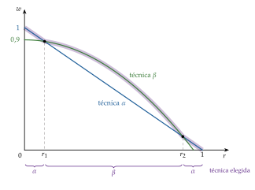
e) Minsky: la hipótesis de la inestabilidad financiera
Idea: Hyman Minsky lee a Keynes como el teórico de una economía con bancos y deudas, en la que la inestabilidad nace dentro del sistema financiero.
Las 3 posiciones financieras:
de cobertura: los ingresos esperados pagan los intereses y el principal;
especulativa: pagan los intereses, pero el principal hay que refinanciarlo;
Ponzi: no pagan ni los intereses; hay que endeudarse más o vender activos, y solo funciona si sus precios suben.
La dinámica: en una expansión larga, los éxitos animan a endeudarse y los prestamistas relajan sus criterios; las posiciones pasan de cobertura a especulativas y de especulativas a Ponzi. La estabilidad es desestabilizadora: basta una subida de tipos o una caída de los ingresos para que las ventas forzosas hundan los precios de los activos y la crisis se propague. Pegatina: «después de la calma viene la tempestad».
Implicaciones: un «gran gobierno», cuyo déficit sostiene los beneficios en la recesión, y un «gran banco», el banco central como prestamista de última instancia, frenan la caída; pero, al hacerlo, animan a asumir más riesgo, y la regulación financiera tiene que ir por delante [ver tema 3.A.42].
El dinero endógeno: para los postkeynesianos, el dinero no lo fija el banco central, como en la Teoría general, sino que lo crean los bancos al conceder créditos; el banco central fija el tipo de interés y da las reservas que se le piden, y la oferta de dinero es «horizontal» a ese tipo [ver tema 3.A.37].15
f) Evidencia empírica
La crisis de 2007-2008 se leyó como un «momento Minsky»: la deuda del sector privado no financiero de Estados Unidos pasó del 125 % del PIB en 1990 al 171 % a finales de 2007, y la de los hogares, del 61 % al 98 %, con una parte creciente que solo se sostenía si la vivienda seguía subiendo (gráfico 12). El máximo, 172,0 %, llegó en el tercer trimestre de 2008; a finales de 2025 era del 140,3 % [ver tema 3.A.42].
El Banco de Inglaterra describe hoy la creación de dinero como los postkeynesianos: la mayor parte del dinero son depósitos que crean los bancos al prestar.
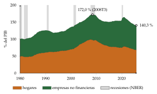
Fuente: elaboración propia a partir de Bank for International Settlements (2026); datos trimestrales, último dato del cuarto trimestre de 2025. En gris, las recesiones.
g) Valoración
Virtudes: tomaron en serio la incertidumbre, la distribución y las finanzas, que la macroeconomía dominante dejó de lado hasta 2008, y anticiparon el dinero endógeno, hoy aceptado.
Críticas: no formaron un modelo común ni un programa con contrastes empíricos sistemáticos; su rechazo del instrumental neoclásico los dejó fuera de la corriente principal y de la política; y la controversia del capital, que ganaron en la lógica, no cambió la práctica.
Recapitulación: los postkeynesianos se quedan con la demanda efectiva y la incertidumbre y rechazan el instrumental neoclásico. Otros economistas hicieron lo contrario: aceptarlo y buscar en él lo que le faltaba a Keynes.
III.2. Los keynesianos del desequilibrio
Caracterización según Schumpeter
Líderes: Robert Clower y Axel Leijonhufvud, que a finales de los 60 sostienen que la Teoría general es una teoría de lo que pasa cuando los precios no vacían los mercados, y que el IS-LM, un modelo de equilibrio, la había perdido por el camino.
Seguidores: Don Patinkin como antecedente; los modelos de Robert Barro y Herschel Grossman, Jean-Pascal Bénassy, Jacques Drèze y Edmond Malinvaud. Es una escuela de los 70, sobre todo europea, que después se dispersa.
Objeto: los equilibrios sin vaciado de mercado, llamados equilibrios no walrasianos o con racionamiento:
los precios se ajustan despacio, tanto que a corto plazo pueden tomarse como dados;
se comercia a precios que no son los de equilibrio: en cada mercado se intercambia lo que quiere el lado corto, y el otro lado queda racionado;
el racionamiento en un mercado se contagia a los demás, y la economía puede quedarse con paro involuntario. Es un problema de coordinación: las empresas no contratan porque no venden, y los hogares no compran porque no tienen empleo.
Método: hogares y empresas que maximizan, como en el equilibrio general, pero sin subastador walrasiano y con restricciones de cantidad además de las de precios.
Patinkin (1956): el paro como ajuste lento
a) Idea
En Money, Interest, and Prices, Patinkin (1956) (2.ª ed., 1965) integra el dinero en el equilibrio general de Walras: con los saldos reales en la demanda de bienes, el dinero fija el nivel de precios sin romper la teoría del valor [ver tema 3.A.21]. Y quiere hacer sitio en ese equilibrio general al paro involuntario de Keynes.
b) Modelo
i) Supuestos: 4 mercados (trabajo, bienes, bonos y dinero), con la atención en los 2 primeros; precios y salarios flexibles, pero lentos.
ii) Desarrollo (gráfico 13):
en el trabajo, la demanda sale de \(\mathrm{PMg}_L(L)=w\) y la oferta es \(L^S(w)\); en el equilibrio, \((L_0,w_0)\) y \(Y_0=F(L_0)\): el punto \(A\) del panel a y el \(B\) del panel b, donde el gasto planeado, \(E_0\), iguala la producción. La demanda de bienes incluye el efecto saldos reales (o efecto Pigou-Patinkin): si baja \(P\), sube la riqueza real y el consumo, \[Y^D=C\Big(Y,\,i,\,\frac{M}{P}\Big)+I(i)+\overline{G},\qquad \frac{\partial C}{\partial(M/P)}>0; \tag{14}\]
la perturbación: cae la demanda de bienes. Como los precios bajan despacio, las empresas no venden lo que producían, acumulan existencias y acaban produciendo menos. Queda un exceso de oferta de bienes: producirían más si se lo compraran (de \(C\) a \(B\)), pero solo venden \(Y_1\) (el punto \(G\));
necesitan menos trabajo y, al mismo salario real (si precios y salarios bajan en la misma proporción), contratan menos: el empleo queda en el punto \(K\), fuera de su curva de demanda de trabajo y de la curva de oferta de los trabajadores. Ni unos ni otros eligen: la falta de demanda de bienes los fuerza.
iii) Implicaciones:
hay paro involuntario sin que el salario real esté por encima del de equilibrio: el paro nace en el mercado de bienes y se traslada al de trabajo, que es la tesis de Keynes;
pero no es un equilibrio: con exceso de oferta de bienes y de trabajo, precios y salarios siguen bajando; el efecto saldos reales sube la demanda (\(E_1\to E_2\to E_0\)) y la economía vuelve, despacio, de \(K\) a \(A\) y de \(G\) a \(B\): al pleno empleo;
la política de demanda sirve para acortar un ajuste que llegaría solo.
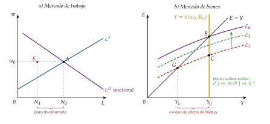
c) Valoración
Virtudes: primera explicación del paro involuntario dentro del equilibrio general sin un salario demasiado alto; para Patinkin, la verdadera síntesis de Keynes y Walras, frente a la del IS-LM, que reducía a Keynes al caso del salario rígido o de la trampa de la liquidez.
Críticas: el paro es solo transitorio, no el «equilibrio con paro» que buscaba Keynes; da por hecho que el ajuste es estable; y el efecto saldos reales es pequeño y lento. Para Patinkin, si el paro se debía solo a salarios rígidos, Keynes no aportaba nada nuevo; Lucas (1980) vio en su libro la versión más acabada de la síntesis.
Clower (1965): la decisión dual
a) Idea
En «The Keynesian Counter-Revolution», Clower (1965) busca lo nuevo de Keynes en la función de consumo: el consumo depende de la renta realizada, algo que la teoría walrasiana no puede recoger, porque en ella la demanda depende solo de los precios. De ahí su dilema: o la ley de Walras es incompatible con la economía keynesiana, «o Keynes no tenía nada fundamentalmente nuevo que añadir a la teoría ortodoxa».
b) Modelo
i) Supuestos: no hay subastador; se comercia a los precios vigentes aunque no vacíen los mercados; los hogares venden trabajo y compran bienes.
ii) Desarrollo (gráfico 14):
la demanda nocional es la walrasiana, la que el hogar planea si puede vender todo el trabajo que quiere a los precios vigentes: \(C^{\mathrm{noc}}\), con \(L^S(w)\);
la demanda efectiva: si no puede vender más que \(\overline{L}<L^S(w)\), su demanda de bienes depende de la renta que de verdad obtiene, \(C^{\mathrm{ef}}=C(w\,\overline{L})<C^{\mathrm{noc}}\). Es la hipótesis de la decisión dual: el hogar decide primero cuánto trabajo vende y, con la renta que consigue, cuánto compra. Pegatina: «de donde no hay, no se puede sacar».16
La ley de Walras [ver tema 3.A.21]: con las demandas nocionales, el valor de los excesos de demanda de los \(n\) mercados es siempre cero, \[\sum_{k=1}^{n}p_k\,z_k^{\mathrm{noc}}(\vec{p})\equiv 0. \tag{15}\] Con el trabajo racionado, el hogar gasta en bienes y dinero lo que de verdad ingresa, y el valor de sus excesos de demanda efectivos de bienes y de dinero es cero. Pero el exceso de oferta de trabajo sigue ahí; como el empleo lo fija el lado corto, las empresas contratan \(L^D=\overline{L}\): \[\sum_{k\neq L}p_k\,z_k^{\mathrm{ef}}+W\,\big(L^D-L^S\big)=W\,\big(\overline{L}-L^S\big)<0. \tag{16}\] Al paro no le corresponde, al otro lado, un exceso de demanda de bienes: los parados querrían comprar, pero su deseo no es una demanda efectiva.
Un ejemplo: un consultor sin clientes querría beber champán, y el bodeguero querría vender más champán y contratar consultores para crecer. Los 2 saldrían ganando con el intercambio, pero el deseo del consultor no llega al mercado: sin renta, no es demanda, y el precio no transmite la señal que los coordinaría.
iii) Implicaciones: el paro no envía ninguna señal al mercado de bienes; nada empuja a las empresas a producir más. La economía puede quedarse en un equilibrio con paro, un fallo de coordinación que la política de demanda resuelve; el multiplicador es la forma de ese contagio entre mercados.
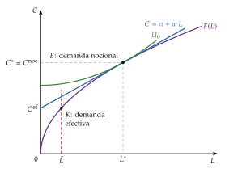
c) Extensiones
Clower (1967) añade que, en una economía monetaria, los bienes se compran con dinero: el dinero tiene que estar antes que la compra [ver tema 3.A.21].
d) Evidencia empírica
El consumo responde a la renta corriente más de lo que predice la renta permanente, como cabe esperar si una parte de los hogares no puede gastar lo que no ingresa [ver tema 3.A.33].
e) Valoración
Virtudes: da fundamento microeconómico a la función de consumo keynesiana y al multiplicador.
Críticas: si todo se mide en términos efectivos (con \(\overline{L}\) en lugar de \(L^S\)), la ley de Walras vuelve a cumplirse; y la decisión dual explica qué pasa una vez que los precios están mal, pero no por qué no se ajustan. Para Clower, aun así, la síntesis había reducido a una cuestión de salarios rígidos una teoría revolucionaria.
Leijonhufvud (1968): la economía de Keynes frente a la economía keynesiana
a) Idea
b) Modelo: sus 4 tesis
La velocidad de ajuste: en Keynes, a corto plazo las cantidades se ajustan antes que los precios; es el orden inverso al de Marshall. No hace falta suponer precios rígidos: basta con que se muevan más despacio que las cantidades.
La información: sin subastador, nadie conoce los precios de equilibrio; mientras los buscan, vendedores y trabajadores mantienen sus precios y lo que se ajusta es lo que se vende y se emplea.
El multiplicador: la caída de las ventas reduce la renta y, con ella, la demanda efectiva de otros (la decisión dual): un proceso que amplifica la perturbación.
El tipo de interés: el problema de fondo no es el salario, sino un tipo de interés a largo plazo que no baja lo bastante cuando cae la inversión, porque los inversores esperan que vuelva a su nivel «normal»: el tipo de mercado queda por encima del natural de Wicksell. El ahorro y la inversión no se coordinan en el tiempo, y bajar los salarios no ataca la causa.
Implicaciones: el paro keynesiano es un fallo de coordinación por falta de información, y no la consecuencia de un salario rígido.18
c) Valoración
Virtudes: devolvió a Keynes el problema de la coordinación y la información, y explicó por qué la síntesis lo había perdido.
Críticas: es una interpretación discutida de Keynes, no un modelo formal; la parte formal la harán Barro y Grossman y Malinvaud.
Barro y Grossman (1971): el modelo de desequilibrio general
a) Idea
Barro y Grossman (1971) juntan la demanda efectiva de bienes de Clower y la demanda de trabajo racionada de Patinkin en un modelo de equilibrio general con precios y salarios fijos.
b) Modelo
i) Supuestos: el nivel de precios \(P\) y el salario nominal \(W\) están dados; empresas competitivas con \(Y=F(L)\); en cada mercado manda el lado corto.
ii) Desarrollo, con exceso de oferta de bienes y de trabajo:
las empresas, que no venden todo lo que querrían, solo contratan el trabajo que necesitan para producir lo que venden: su demanda efectiva de trabajo, \(L^{\mathrm{ef}}=F^{-1}(Y)\), es menor que la nocional, la de \(\mathrm{PMg}_L=W/P\);
los hogares, racionados en el empleo, gastan según la renta que obtienen: \(C^{\mathrm{ef}}=C\big(\tfrac{W}{P}\,L^{\mathrm{ef}},\,\tfrac{M}{P}\big)\);
la producción es la demandada, \(Y=C^{\mathrm{ef}}+\overline{I}+\overline{G}\): cada mercado limita al otro y el resultado es el multiplicador keynesiano.
En el caso opuesto, con exceso de demanda de bienes y de trabajo, los hogares no encuentran qué comprar, deciden trabajar menos y aparece un multiplicador de oferta.
iii) Implicaciones: puede haber paro involuntario con el salario real «correcto»; bajarlo no ayuda si el problema es la demanda.
Qué añade frente a Patinkin (gráfico 15, con los mismos ejes que el gráfico 13):
las empresas que no venden solo demandan el trabajo necesario para producir \(Y_1\): la demanda efectiva de trabajo se vuelve vertical en \(N_1\), y el empleo queda en \(K\) con el salario real del equilibrio walrasiano;
los hogares racionados gastan según la renta que obtienen: la demanda efectiva de bienes, \(E^{\mathrm{ef}}\), queda por debajo de la nocional, y la economía se queda en \(G\);
con \(P\) y \(W\) fijos no hay efecto saldos reales: \(K\) y \(G\) ya no son un tránsito hacia \(A\) y \(B\), sino un equilibrio con racionamiento, y solo un aumento del gasto autónomo, con su multiplicador, saca de él a la economía.
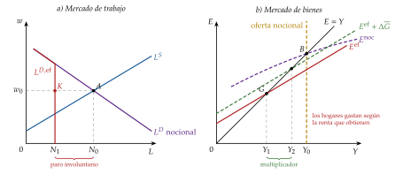
Fuente: elaboración propia a partir de Clower (1965), Barro y Grossman (1971) y De Vroey (2016, cap. 3). \(E^{\mathrm{noc}}\) y \(E^{\mathrm{ef}}\), demanda nocional y efectiva de bienes; \(L^{D,\mathrm{ef}}\), demanda efectiva de trabajo.
c) Extensiones
d) Valoración
El propio Barro lo abandonó: en «Second Thoughts on Keynesian Economics», Barro (1979) sostiene que unos precios fijos sin explicación dejan sin aprovechar ganancias del intercambio que los agentes aprovecharían, y se pasa a la nueva macroeconomía clásica [ver tema 3.A.6].
Malinvaud (1977): los regímenes del paro
a) Idea
En Francia, los sindicatos decían que subir los salarios aumentaría el consumo y el empleo, y la patronal, que lo reduciría porque encarecería el trabajo. En The Theory of Unemployment Reconsidered, Malinvaud (1977) muestra que los 2 pueden tener razón: depende de qué mercado esté racionado.
b) Modelo
i) Supuestos: los de Barro y Grossman, con \(W\) y \(P\) fijos a corto plazo y una oferta de trabajo \(\overline{L}\) dada.
ii) Desarrollo: la producción es la menor de 3 cantidades, la demandada, la que las empresas quieren ofrecer a ese salario real y la de pleno empleo: \[Y=\min\Big\{\,Y^{D}\Big(\overline{A},\frac{M}{P}\Big),\ \ Y^{S}\Big(\frac{W}{P}\Big),\ \ F(\overline{L})\,\Big\}, \tag{17}\] con \(\overline{A}\) el gasto autónomo. Según cuál sea la menor, la economía está en uno de 3 regímenes (gráfico 16 y tabla 3):
paro keynesiano (\(Y=Y^D\)): exceso de oferta de bienes y de trabajo; las empresas producirían más a ese salario real, pero no venden. Es el paro de Keynes;
paro clásico (\(Y=Y^S\)): el salario real es tan alto que a las empresas no les compensa producir más, aunque podrían vender: exceso de demanda de bienes y exceso de oferta de trabajo;
inflación reprimida (\(Y=F(\overline{L})\)): precios y salarios demasiado bajos para la cantidad de dinero; exceso de demanda en los 2 mercados.
Los 3 regímenes se tocan en el equilibrio walrasiano, \(\mathcal{W}\), el único punto sin racionamiento.19
iii) Implicaciones: la política depende del diagnóstico:
con paro keynesiano, más demanda, y subir los salarios puede crear empleo por el consumo: tienen razón los sindicatos;
con paro clásico, más demanda no sirve: hay que bajar el salario real o subir la rentabilidad, y tiene razón la patronal;
una misma tasa de paro puede pedir políticas opuestas;
vista así, la revolución keynesiana es un cambio de diagnóstico: del paro clásico, el de Pigou, al paro keynesiano, el de la Gran Depresión.
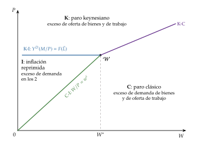
Fuente: elaboración propia a partir de Malinvaud (1977) y Tsoulfidis (2010, 295). Un esquema parecido, en Wikimedia Commons. K, paro keynesiano; C, paro clásico; I, inflación reprimida. La frontera entre K e I es horizontal: con el gasto autónomo, la cantidad de dinero y la oferta de trabajo dados, y si el consumo no depende del salario real, solo hay un nivel de precios con el que la demanda absorbe la producción de pleno empleo.

| Régimen | Bienes | Trabajo | Política |
|---|---|---|---|
| Paro keynesiano | Exceso de oferta | Exceso de oferta | Más demanda |
| Paro clásico | Exceso de demanda | Exceso de oferta | Salario real más bajo, más rentabilidad |
| Inflación reprimida | Exceso de demanda | Exceso de demanda | Menos demanda |
| Subconsumo | Exceso de oferta | Exceso de demanda | Caso aparte, fuera del modelo básico |
Fuente: elaboración propia a partir de Malinvaud (1977) y Muellbauer y Portes (1978).
c) Extensiones
Muellbauer y Portes (1978) añaden existencias y estudian un 4.º caso, el subconsumo (exceso de oferta de bienes y de demanda de trabajo), que no es un régimen del modelo básico.
La tipología pasó al debate sobre el paro europeo y a la distinción entre paro keynesiano y clásico del tema de la tasa natural [ver tema 3.A.28].
d) Evidencia empírica
En el proyecto que coordinaron Drèze y Bean (1990) se estimaron modelos de desequilibrio para 10 países: en los 80, el paro europeo tenía una parte clásica, por los costes laborales tras las crisis del petróleo, y una parte keynesiana, por la demanda.
e) Valoración
Virtudes: una tipología clara, que todavía sirve para diagnosticar el paro y elegir la política.
Críticas: los precios y los salarios son exógenos y el modelo es estático: no dice cuánto dura cada régimen ni cómo se pasa de uno a otro.
Valoración y legado de los keynesianos del desequilibrio
Virtudes: dieron a Keynes fundamentos microeconómicos; hicieron del paro un problema de coordinación, la idea que retoman los modelos con equilibrios múltiples [ver tema 3.A.21]; y distinguieron tipos de paro que piden políticas distintas.
Críticas: no explican por qué los precios no se ajustan; sus expectativas no son racionales y sus parámetros cambiarían con la política, la crítica de Lucas [ver tema 3.A.6]; y los modelos con racionamiento se complican mucho fuera de los casos sencillos.
Lo que añaden, en 2 gráficos: con Patinkin, el paro involuntario es un tránsito y la economía vuelve sola al pleno empleo (gráfico 13); con Clower y Barro y Grossman, es un equilibrio con racionamiento del que solo la saca la demanda (gráfico 15).
Legado: la nueva economía keynesiana conserva su pregunta y responde a la crítica: explica con microfundamentos por qué los precios y los salarios son rígidos (costes de menú, salarios de eficiencia, contratos) [ver tema 3.A.7].
| Keynes | Síntesis neoclásica | Postkeynesianos | Desequilibrio | |
|---|---|---|---|---|
| ¿Por qué hay paro? | Demanda efectiva insuficiente | Salario nominal rígido | Demanda efectiva, también a largo plazo | Precios que no vacían: fallo de coordinación |
| Precios y salarios | Salario nominal rígido; bajarlo no cura | Rígidos a corto, flexibles a largo | Margen sobre costes; reparto según el poder | Fijos a corto plazo, sin explicar |
| Dinero | Exógeno; preferencia por la liquidez | Exógeno; neutral a largo plazo | Endógeno; fragilidad financiera | Saldos reales y racionamiento |
| Incertidumbre | Central | Secundaria | Central | Secundaria |
| Política | Fiscal; socialización de la inversión | Sintonía fina [ver tema 3.A.5] | Fiscal, de rentas y regulación financiera | Según el régimen |
Fuente: elaboración propia.
Recapitulación: los postkeynesianos rechazan el instrumental neoclásico para quedarse con la demanda efectiva y la incertidumbre; los keynesianos del desequilibrio lo aceptan para encontrar en él el paro involuntario. Frente a la síntesis, los 2 coinciden en que el paro no se explica solo con un salario que no baja.
Conclusión
Recapitulación:
En conclusión, Keynes invierte la causalidad del modelo neoclásico: la demanda efectiva fija la producción y el empleo, el tipo de interés es el precio de la liquidez y no el del ahorro, y bajar los salarios no garantiza el pleno empleo.
Sus herederos no se quedaron con la lectura de la síntesis: los postkeynesianos de Cambridge llevaron sus ideas a la distribución, al capital y a las finanzas, y los teóricos del desequilibrio explicaron el paro como un fallo de coordinación entre mercados que no se vacían.
Relevancia:
La Gran Depresión le dio la razón a Keynes; la estanflación de los 70, a sus críticos; la Gran Recesión y la pandemia devolvieron a primer plano los multiplicadores, la trampa de la liquidez y el «momento Minsky».
Extensiones:
La síntesis y su crítica monetarista [ver tema 3.A.5]; la nueva macroeconomía clásica [ver tema 3.A.6] y la nueva economía keynesiana, que fundamenta las rigideces que el desequilibrio daba por supuestas [ver tema 3.A.7]; la demanda de dinero [ver tema 3.A.35]; el ciclo financiero [ver tema 3.A.42]; el crecimiento y la distribución [ver tema 3.A.43] [ver tema 3.A.45].
Opinión:
El gran acierto de Keynes fue la pregunta, si el paro puede ser un fallo del sistema y no de un mercado.
La macroeconomía de hoy la responde con modelos que él no habría escrito, pero la respuesta práctica de 2020 fue la suya.
Idea final:
A la pregunta de si una economía con paro se corrige sola, Keynes responde que quizá sí, pero a largo plazo, y que mientras tanto el paro de hoy es hambre de hoy.
Sus herederos añaden que el largo plazo se construye con la demanda de hoy: la inversión que no se hace hoy es la capacidad que faltará mañana.
Por eso el pan de hoy no tiene por qué ser hambre para mañana: si se invierte, es lo que permite construir el futuro sin el estómago vacío.
A. Anexo: los modelos neoclásico y keynesiano, mercado a mercado
Este anexo desarrolla lo que el apartado I.3 y el bloque II resumen: el punto de partida marshalliano y, mercado a mercado, las piezas de los 2 modelos.
A.1. El mercado de pescado de Marshall
Keynes se formó con Marshall y razona como él: equilibrio parcial, periodos definidos por el tiempo que tienen los agentes para ajustarse y expectativas a corto plazo [ver tema 3.A.16].
En su mercado de pescado (gráfico 17) hay 2 ofertas:
la oferta de mercado de cada día (\(\mathrm{MS}\)) es vertical: el pescado ya está en la lonja;
la oferta normal (\(\mathrm{NS}\)) es creciente: con tiempo, entran más barcos y la cantidad se ajusta.
Si sube la demanda, el primer día el precio salta hasta vaciar la lonja (equilibrio temporal, \(B\)), con ganancias extraordinarias para los que ya pescaban; con el tiempo llegan más barcos y el precio baja hacia el equilibrio normal (\(C\)). En ningún momento queda pescado sin vender: los precios se ajustan antes que las cantidades.
Keynes conserva el corto plazo y las expectativas, pero cambia el orden: en su economía, a corto plazo se ajustan antes las cantidades, y un mercado puede no vaciarse. Es la lectura que hará Leijonhufvud (III.2).
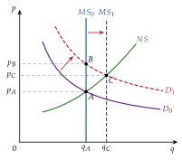
Fuente: elaboración propia a partir de De Vroey (2016, fig. 1.1) y Marshall (1890, lib. V, cap. V).
A.2. El mercado de trabajo
Neoclásicos: una empresa representativa elige el trabajo para maximizar su beneficio con el capital dado, \[\begin{array}{rl}\displaystyle \max_{L} & \displaystyle P\,F(L,\overline{K})-W\,L \\ \text{s.a.} & L\geq 0\end{array}\] y la condición de primer orden, \(\mathrm{PMg}_L=W/P\), da una demanda de trabajo decreciente en el salario real. Los hogares eligen entre consumo y ocio, y si domina el efecto sustitución ofrecen más trabajo cuanto mayor es el salario real [ver tema 3.A.25]. El salario real se ajusta hasta vaciar el mercado; los cambios de precios se trasladan en la misma proporción al salario nominal y el empleo no cambia: la oferta agregada es vertical.
Keynes: la misma demanda de trabajo, pero con el salario nominal negociado, \(W_0\), y el empleo fijado por la demanda de bienes. Si los precios suben, el salario real baja y se contrata más (oferta agregada creciente mientras haya recursos ociosos); si bajan, se contrata menos y aparece el paro involuntario (gráfico 7).
A.3. El mercado de bienes
Neoclásicos: de \(Y=C+I+G\) y del ahorro privado, \(S_{\mathrm{priv}}=Y-T-C\), sale \[S_{\mathrm{priv}}+(T-G)=I: \tag{18}\] el ahorro privado más el público financia la inversión. Con el presupuesto equilibrado, el ahorro privado iguala la inversión, y el tipo de interés real los iguala (gráfico 3). Si el Estado gasta más, sube el tipo y el gasto privado baja en la misma cuantía.
Keynes: el multiplicador sale de sumar las rondas de gasto. Un aumento del gasto autónomo, \(\Delta\overline{A}\), es renta de alguien, que gasta la parte \(c\,(1-t)\); esa parte es renta de otro, que gasta otra vez esa proporción, y así sucesivamente: \[\Delta Y=\Delta\overline{A}\,\Big[1+c\,(1-t)+\big(c\,(1-t)\big)^2+\cdots\Big]=\frac{\Delta\overline{A}}{1-c\,(1-t)}, \tag{19}\] una serie geométrica que converge porque \(0<c\,(1-t)<1\). Es el mismo resultado que (7). ∎
A.4. El mercado de dinero
Neoclásicos: la teoría cuantitativa [ver tema 3.A.35]:
Fisher: la ecuación de cambio, \(M\,V\equiv P\,T\), con \(T\) el volumen de transacciones (no los impuestos), es una identidad; se convierte en teoría con 3 supuestos: \(V\) depende de hábitos de pago e instituciones que cambian despacio, \(T\) (o \(Y\)) lo fija el sector real y \(M\) es exógena. Entonces la causalidad va de \(M\) a \(P\);
Cambridge: la demanda de saldos de caja es una fracción \(k\) de la renta nominal, \(M^D=k\,P\,Y\); Marshall y Pigou (1917) la ven como una decisión de los individuos, que podría depender del tipo de interés y de las expectativas, aunque la tratan como constante. Con \(k=1/V\), las 2 ecuaciones coinciden.20
Keynes: la demanda de Cambridge con un término más, el especulativo, que depende del tipo de interés: \(M/P=k\,Y-h\,i\) (8). Si \(h=0\) vuelve la de Cambridge; cuanto mayor es \(h\), menos determina el dinero los precios y más el tipo de interés.
A.5. Las políticas en los 2 modelos
Expansión fiscal: en el modelo neoclásico, la demanda de fondos se desplaza, sube el tipo de interés real y la producción no cambia; en el de Keynes, con recursos ociosos, la producción sube con el multiplicador (19).
Expansión monetaria: en el neoclásico, la demanda agregada cuantitativa se desplaza sobre la oferta vertical y solo suben los precios; en el de Keynes, baja el tipo de interés, sube la inversión y la producción, salvo con trampa de la liquidez o inversión insensible.
Rebaja salarial: en el neoclásico, devuelve el pleno empleo; en el de Keynes, solo crea empleo si sube la inversión, y nada lo garantiza (capítulo 19). El resumen es la tabla 2.
B. Anexo: «clásicos» y «neoclásicos» en la Teoría general
Keynes da a «clásicos» un sentido propio. En una nota del capítulo 1 explica que el nombre lo inventó Marx para Ricardo, James Mill y sus predecesores, y que él lo extiende a quienes adoptaron y perfeccionaron la teoría ricardiana, como John Stuart Mill, Marshall, Edgeworth y Pigou. Hoy llamamos neoclásicos a casi todos estos últimos [ver tema 3.A.2] [ver tema 3.A.3].
Lo que los une, para Keynes, no es la teoría del valor, sino la ley de Say y la confianza en que, con salarios flexibles, la economía tiende al pleno empleo.
La agrupación es discutible: Ricardo aceptaba la ley de Say, pero en el capítulo sobre la maquinaria de la 3.ª edición de sus Principios admitió que las máquinas pueden dejar sin trabajo a los obreros; no daba por supuesto el pleno empleo.
El término «neoclásico» lo acuñó Thorstein Veblen hacia 1900 para subrayar la continuidad de Marshall con los clásicos.
C. Anexo: notas del tema anterior
Este anexo conserva notas del tema anterior que no se cantan, pero amplían lo que el tema cuenta.
Neutralidad, superneutralidad y dicotomía:
el dinero es neutral si los cambios en su cantidad no tienen efectos reales, y superneutral si tampoco los tienen los cambios en su tasa de crecimiento (en un modelo estático, como el del apartado I.3, no tiene sentido);
hay dicotomía clásica si las variables reales (empleo y producción) se determinan en un subsistema independiente de la cantidad de dinero y del nivel de precios: el dinero es un velo;
son conceptos distintos: Sargent (1979) construye un ejemplo en el que se cumple la dicotomía y no la neutralidad, aunque en la práctica conducen a definiciones parecidas.
David Hume y el corto plazo: Hume (1752) distinguía el largo plazo, en el que más dinero sube los precios en la misma proporción, del corto, en el que, mientras los precios se ajustan, el dinero nuevo anima la industria y el comercio. Los clásicos buscaban leyes generales y se quedaron con el largo plazo; Keynes vuelve al corto.
La causalidad en el mercado de trabajo: en el modelo neoclásico, la causalidad va del salario a la demanda de trabajo, que se fija sin mirar la demanda de los productos de la empresa; Keynes la invierte: la demanda de bienes fija el empleo, y el empleo, el salario real.
Otros escritos: los ensayos de Essays in Persuasion y las biografías de economistas y políticos de Essays in Biography.
Los Nobel de los seguidores de la síntesis:
Jan Tinbergen, con Ragnar Frisch (1969), por los modelos dinámicos para analizar los procesos económicos;
Paul Samuelson (1970), por elevar el nivel del análisis en la ciencia económica;
John Hicks, con Kenneth Arrow (1972), por la teoría del equilibrio general y del bienestar;
James Meade, con Bertil Ohlin (1977), por la teoría del comercio internacional;
Lawrence Klein (1980), por los modelos econométricos y su aplicación a las fluctuaciones y la política económica;
Franco Modigliani (1985), por el análisis del ahorro y de los mercados financieros;
Robert Solow (1987), por la teoría del crecimiento económico.
El nombre de la síntesis: Paul Samuelson llamó «síntesis neoclásica» a la combinación de lo que creía valioso de la economía anterior y de la teoría de la renta keynesiana, en la 3.ª edición de su manual (1955). Para los keynesianos de los años 40 resultó demasiado neoclásica, y para los monetaristas de los 60, demasiado keynesiana [ver tema 3.A.5].
Leer hoy la Teoría general: para Mankiw (2006), la experiencia es a la vez estimulante y frustrante: es la obra de una gran mente ante un problema social enorme, pero como argumento lógico parece incompleta.
D. Anexo: aspectos para el test
Preguntas tipo test del primer ejercicio: simulador de test.
Bibliografía
Los otros 2: la historia es fuente de ideas (principios que no fructificaron pueden orientar la investigación de hoy) y muestra cómo se desplazan las fronteras de la ciencia (cada época trae sus problemas y su forma de afrontarlos). La evolución del pensamiento económico resulta de la interacción de varios factores: el contexto económico de cada momento, el pensamiento anterior y los avances de otras disciplinas, como la filosofía, las matemáticas, la física o la biología. Conocerla permite entender las raíces del pensamiento actual, analizar los fenómenos económicos pasados y presentes y valorar los distintos programas de investigación.↩︎
En el capítulo 2, Keynes admite que la teoría clásica explica 2 clases de paro: el friccional, por los desajustes temporales entre puestos y trabajadores, y el voluntario, el de quien no acepta trabajar al salario que corresponde a su productividad marginal. Lo que no explica es una tercera clase, el paro involuntario.↩︎
En el Cambridge de los años 30 se apreciaba poco a Walras, y Keynes no veía útil su teoría para lo que quería demostrar. Se le atribuye un juicio muy duro sobre la teoría walrasiana en una carta de 1934 a Nicholas Georgescu-Roegen. En el prefacio a la edición francesa, Keynes (1939) explica que llama «general» a su teoría porque se ocupa sobre todo del comportamiento del sistema económico en su conjunto (la renta, el beneficio, la producción, el empleo y el ahorro agregados) y no del de una industria o un individuo.↩︎
En 1933 aparecieron a la vez The Economics of Imperfect Competition, de Joan Robinson, y The Theory of Monopolistic Competition, de Edward Chamberlin [ver tema 3.A.18].↩︎
Florence Ada Keynes fue en 1932 la segunda mujer alcaldesa de Cambridge.↩︎
Al principio, el puesto lo pagaban de su bolsillo Marshall y Pigou. De 1911 a 1945 dirigió The Economic Journal; en 1925 se casó con la bailarina rusa Lydia Lopokova, y formó parte del grupo de Bloomsbury, con Virginia Woolf y Lytton Strachey. En 1942 recibió el título de barón Keynes de Tilton.↩︎
En 1917 recibió la Orden del Baño, en el grado de Companion (CB), no el de caballero.↩︎
La idea de un mercado de fondos que se prestan y se toman prestados es de Marshall y Wicksell; la expresión «fondos prestables» es de Robertson y Ohlin, en los años 30, ya en polémica con Keynes. Para Wicksell, el tipo natural puede diferir del que cobran los bancos, y esa diferencia mueve los precios.↩︎
Keynes escribe \(N\) para el empleo: \(Z=\phi(N)\) y \(D=f(N)\). Aquí, \(L\), como en el resto del temario.↩︎
Keynes escribe el consumo como función del empleo, \(C=\chi(N)\), y define el ahorro como el exceso de la renta sobre el consumo.↩︎
Si \(h=0\), la demanda de dinero no depende del tipo y vuelve la de Cambridge, \(M/P=k\,Y\): es el caso clásico. Si \(h\to\infty\), la demanda es horizontal: es la trampa de la liquidez [ver tema 3.A.5].↩︎
Con ingresos \((1+\mu)\) veces el coste directo, el valor añadido es \((1+\mu)\,W\,L+\mu\) veces el coste de las materias primas; al dividir la masa salarial por esa cantidad sale (11). Kalecki escribe \(k=1+\mu\), pero aquí \(k\) es la de la demanda de dinero.↩︎
Notación local: \(s_{\mathrm{B}}\) y \(s_{\mathrm{L}}\) son las propensiones a ahorrar de los beneficios y de los salarios (Kaldor escribe \(s_p\) y \(s_w\)), y la tasa de beneficio se escribe \(B/K\) porque \(r\) es en el temario el tipo de interés real.↩︎
El postkeynesianismo estadounidense, con Davidson (1972) y Weintraub, insistió en el dinero y en los contratos nominales como respuesta a la incertidumbre; Eichner y Kregel (1975) lo presentaron como un nuevo paradigma.↩︎
«Demanda efectiva» tiene así 3 sentidos en el temario: el punto de demanda efectiva de Keynes (capítulo 3), la demanda condicionada por las restricciones de cantidad de Clower y la curva de cuota de mercado de Chamberlin [ver tema 3.A.18].↩︎
En «Effective Demand Failures», Leijonhufvud (1973) propone el pasillo (corridor): dentro de una banda alrededor del equilibrio, los colchones de la economía (existencias, dinero, crédito) absorben las perturbaciones y los precios devuelven la economía al equilibrio; fuera de ella, los colchones se agotan, el gasto pasa a depender de la renta corriente y el multiplicador amplifica la caída. Los neoclásicos tendrían razón para las perturbaciones pequeñas y Keynes, para las grandes, como la de 1929.↩︎
Notación local: \(\mathcal{W}\) caligráfica para el punto walrasiano, porque \(W\) es el salario nominal; \(Y^D\) e \(Y^S\), la producción demandada y la ofrecida.↩︎
La idea de que más dinero rebaja su valor es muy anterior: Martín de Azpilcueta la expuso en 1556, en la Escuela de Salamanca, 12 años antes que Jean Bodin.↩︎